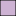

<!doctype html>
<html lang="en">

<head>
    <meta charset="utf-8">
    <meta http-equiv="X-UA-Compatible" content="IE=edge">
    <meta name="viewport" content="initial-scale=1,user-scalable=no,maximum-scale=1,width=device-width">
    <meta name="mobile-web-app-capable" content="yes">
    <meta name="apple-mobile-web-app-capable" content="yes">
    <link rel="stylesheet" href="css/leaflet.css">
    <link rel="stylesheet" href="css/qgis2web.css">
    <link rel="stylesheet" href="css/fontawesome-all.min.css">
    <link rel="stylesheet" href="css/leaflet-control-geocoder.Geocoder.css">
    <style>
        #map {
            width: 1314px;
            height: 827px;
        }
    </style>
    <title>Tarea 2 SIG</title>
</head>

<body>
    <div id="map">
    </div>
    <script src="js/qgis2web_expressions.js"></script>
    <script src="js/leaflet.js"></script>
    <script src="js/leaflet.rotatedMarker.js"></script>
    <script src="js/leaflet.pattern.js"></script>
    <script src="js/leaflet-hash.js"></script>
    <script src="js/Autolinker.min.js"></script>
    <script src="js/rbush.min.js"></script>
    <script src="js/labelgun.min.js"></script>
    <script src="js/labels.js"></script>
    <script src="js/leaflet-control-geocoder.Geocoder.js"></script>
    <script>
        var highlightLayer;
        function highlightFeature(e) {
            highlightLayer = e.target;

            if (e.target.feature.geometry.type === 'LineString') {
                highlightLayer.setStyle({
                    color: '#ffff00',
                });
            } else {
                highlightLayer.setStyle({
                    fillColor: '#ffff00',
                    fillOpacity: 1
                });
            }
        }
        var map = L.map('map', {
            center: [13.6527, -88.8684],
            zoom: 9,
            zoomControl: true, maxZoom: 28, minZoom: 1
        })
        var hash = new L.Hash(map);
        map.attributionControl.setPrefix('<a href="https://github.com/tomchadwin/qgis2web" target="_blank">qgis2web</a> &middot; <a href="https://leafletjs.com" title="A JS library for interactive maps">Leaflet</a> &middot; <a href="https://qgis.org">QGIS</a>');
        var autolinker = new Autolinker({ truncate: { length: 30, location: 'smart' } });
        var bounds_group = new L.featureGroup([]);
        function setBounds() {
            if (bounds_group.getLayers().length) {
                map.fitBounds(bounds_group.getBounds());
            }
        }
        map.createPane('pane_OSMStandard_0');
        map.getPane('pane_OSMStandard_0').style.zIndex = 400;
        var layer_OSMStandard_0 = L.tileLayer('http://tile.openstreetmap.org/{z}/{x}/{y}.png', {
            pane: 'pane_OSMStandard_0',
            opacity: 1.0,
            attribution: '<a href="https://www.openstreetmap.org/copyright">© OpenStreetMap contributors, CC-BY-SA</a>',
            minZoom: 1,
            maxZoom: 28,
            minNativeZoom: 0,
            maxNativeZoom: 19
        });
        layer_OSMStandard_0;
        map.addLayer(layer_OSMStandard_0);

        map.createPane('pane_municipios');
        map.getPane('pane_municipios').style.zIndex = 400;
        var layer_municipios = L.tileLayer.wms('http://localhost:8080/geoserver/wms', {
            pane: 'pane_municipios',
            opacity: 1.0,
            attribution: "Natural Earth",
            minZoom: 1,
            maxZoom: 28,
            minNativeZoom: 0,
            maxNativeZoom: 19,
            layers: 'municipios',
            format: 'image/png',
            transparent: true,
            tiled: true,
        });
        layer_municipios;
        map.addLayer(layer_municipios);

        map.createPane('pane_cerros');
        map.getPane('pane_cerros').style.zIndex = 400;
        var layer_cerros = L.tileLayer.wms('http://localhost:8080/geoserver/wms', {
            pane: 'pane_cerros',
            opacity: 1.0,
            attribution: "Natural Earth",
            minZoom: 1,
            maxZoom: 28,
            minNativeZoom: 0,
            maxNativeZoom: 19,
            layers: 'cerros',
            format: 'image/png',
            transparent: true,
            tiled: true,
        });
        layer_cerros;
        map.addLayer(layer_cerros);

        map.createPane('pane_rios');
        map.getPane('pane_rios').style.zIndex = 400;
        var layer_rios = L.tileLayer.wms('http://localhost:8080/geoserver/wms', {
            pane: 'pane_rios',
            opacity: 1.0,
            attribution: "Natural Earth",
            minZoom: 1,
            maxZoom: 28,
            minNativeZoom: 0,
            maxNativeZoom: 19,
            layers: 'rios',
            format: 'image/png',
            transparent: true,
            tiled: true,
        });
        layer_rios;
        map.addLayer(layer_rios);

        var title = new L.Control();
        title.onAdd = function (map) {
            this._div = L.DomUtil.create('div', 'info');
            this.update();
            return this._div;
        };
        title.update = function () {
            this._div.innerHTML = '<h2>Tarea 2 SIG</h2>';
        };
        title.addTo(map);
        var osmGeocoder = new L.Control.Geocoder({
            collapsed: true,
            position: 'topleft',
            text: 'Search',
            title: 'Testing'
        }).addTo(map);
        document.getElementsByClassName('leaflet-control-geocoder-icon')[0]
            .className += ' fa fa-search';
        document.getElementsByClassName('leaflet-control-geocoder-icon')[0]
            .title += 'Search for a place';
        var baseMaps = {};
        L.control.layers(baseMaps, {
            ' rios': layer_rios,
            ' cerros': layer_cerros,
            ' municipios': layer_municipios,
        },
            { collapsed: false }).addTo(map);
        setBounds();
    </script>
</body>

</html>